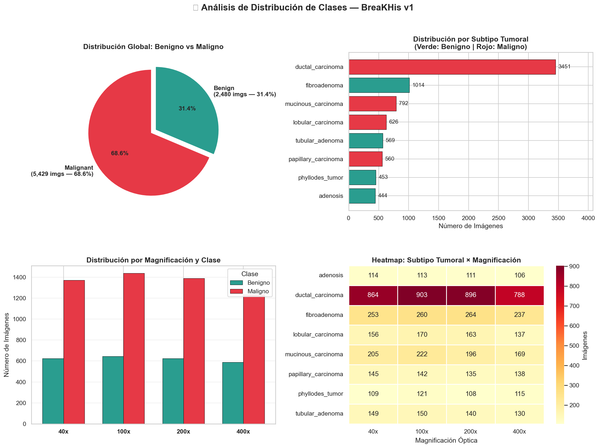
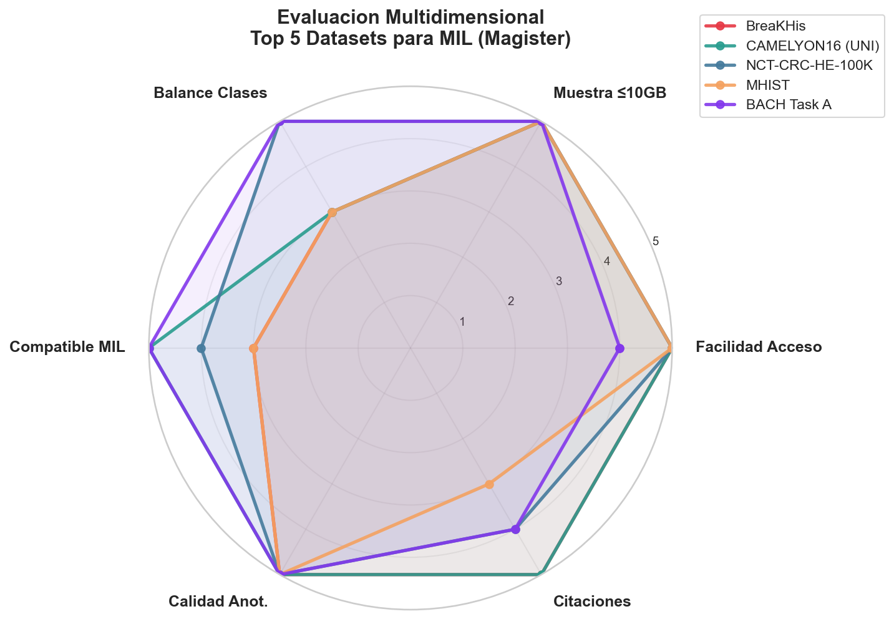

| Dataset | Volumen Real | Contenido Verificado | Estado |
|---|---|---|---|
| BreaKHis v1 Mama • 8 clases |
3.99 GB (4.27 GB .tar.gz) |
7,909 PNG (700×460) 81 pacientes / 82 carpetas |
Local OK |
| PCam (Val Split) Linfonodo • 2 clases |
0.86 GB (HDF5 nativo) |
32,768 parches (96×96) 16,399 Norm / 16,369 Tum |
Local OK |
| NCT-CRC-HE Colon • 9 tejidos |
15.19 GB (100K + Val 7K) |
107,180 TIF (224×224) 100K Train + 7,180 Val |
Completo |
| CAMELYON16 Linfonodo WSI |
10.77 GB (36M+56M+10.68G) |
399 coords (3.17M ptos) 111 XML + 25,235 .npy |
Indexado |
| MHIST Pólipos HP / SSA |
0.33 GB (No descargado) |
3,152 imgs (Tabla 1 ref.) CSV sintético purgado |
DUA BMIRDS |
data_samples/ y los 5.16 GB de Materia Util/ (incluyendo tokens kaggle.json) están blindados por .gitignore; GitHub solo aloja código, notebooks, Excels y figuras (~42 MB).

Es como fotografiar un bosque desde 40x (panorámica), 100x (árboles), 200x (hojas) y 400x (células). Si pones la foto 40x del Sr. Pérez en Entrenamiento y la foto 400x del mismo Sr. Pérez en Test, ¡el algoritmo hace trampa memorizando al paciente en vez del cáncer!
• Antes: tokens[1] leía "14" → reportaba solo 2 pacientes falsos.
• Corregido: f"{tokens[1]}-{tokens[2]}" recupera los 81 pacientes únicos (en 82 carpetas clínicas: el paciente 14-13412 aporta Carcinoma Ductal + Lobular!).
• Tamaño real auditado: 3.99 GB extraído (7,909 PNG de 700×460 px; 68.6% maligno / 31.4% benigno).


Una biopsia de colon no trae solo células cancerosas: trae 9 "ingredientes" mezclados — grasa (ADI), músculo liso (MUS), moco (MUC), glóbulos blancos de defensa (LYM), tejido cicatricial (STR), mucosa normal (NORM), detritos (DEB), vidrio (BACK) y tumor (TUM).
• Train completo en disco: 100,000 TIFs (14.44 GB) + Validación externa (50 pacientes): 7,180 TIFs (0.75 GB) = 15.19 GB reales.
• En la clase vacía BACK, Train tiene brillo medio 142.1 vs Validación 111.3: diferencia de intensidad de escáner/tinción entre hospitales → exige Stain Normalization.


Diferenciar un pólipo benigno (HP) de una lesión precancerígena (SSA) es difícil incluso para médicos humanos. Por eso, en MHIST cada foto fue evaluada por 7 patólogos expertos: hay casos fáciles (7/7 unánime) y casos limítrofes (4/7 vs 3/7) ideales para estudiar incertidumbre diagnóstica.
• El archivo local anterior (annotations.csv) era sintético defectuoso: ponía 100% SSA en Test y 99.4% HP en Train con votos aleatorios imposibles.
• Causa: Dartmouth BMIRDS protege los datos mediante formulario DUA oficial en bmirds.github.io/MHIST/ (GitHub raw da 404).
• Solución: Se eliminó el CSV falso y 04_MHIST_EDA.ipynb reporta explícitamente la Tabla 1 oficial de Wei et al. (2021) sin simular votos ficticios.

Si cada día de entrenamiento vuelves a leer las 3.17 millones de imágenes con un Vision Transformer gigante, tardas semanas. En su lugar, un modelo fundacional (UNI, entrenado en >100M parches médicos) lee cada azulejo una única vez y escribe una ficha de 1,024 números. Nuestro modelo MIL solo lee las fichas!
inference_mode()): Parche 224×224×3 (150,528 valores) → Vector UNI (1,024 dims) o iBOT (768 dims).Tensor[K, 1024] → Proyección + Gated Attention / CLAM / TransMIL → Diagnóstico WSI + Mapa de Calor.

